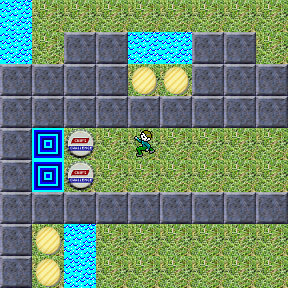

![[A screenshot of New Age CC]](images/newage.jpg)
My first levelset was AndrewE1.dat. When I started working on it, my goal was to create a new 149-level levelset, complete with secret levels and "lessons", but I realize now that I was being way too ambitious. My current goal is to create two ~20-level sets; one for the Lynx ruleset, and one for the MSCC ruleset.
Download the Lynx levelset ( bytes; 1 level, updated 2005-01-06)
For archival purposes, AndrewE1.dat is still available for download. ( bytes)
cclpinfo is a small utility I wrote in c that displays the number and name of all levels in a selected levelset, with options to display the time limit, password, chips required, and hint. cclpinfo was based on a program called datstat written by Madhav Shanbhag.
Current version: 1.3
View the readme
View the changelog
Download cclpinfo.zip (7.55KB; source included)
Programs people have created that relate to Chip's Challenge
These programs allow you to create custom levels
These programs help you manage and play custom levelsets
These programs modify chips.exe in some way.
Several very talented people have created their own custom graphics for Chip's Challenge.
Anders Kaseorg created this tileset for use in Tile World. The images were created with the help of POV-Ray, a ray-tracing program. As a result, they are much more 3D-looking than the original graphics.
Michael Hansen later used the graphics in a patch for MSCC, dubbed "New Age CC", to demonstrate CCHack.
Natural CC takes place in a sprawling field, where Chip runs around collecting [potato] chips, and avoiding quick-sand and lava.
Madhav pioneered the practice of distributing image patches to modifiy the existing graphics, rather than distributing the entire file. He even created a special tool, patchbmp, to help with the task. Time will tell whether other people will follow his example.

The Kayu Interface gives the Chip's Challenge graphics a much needed upgrade, with shinier tiles and a softer, calmer feel overall.
![[A Chip's Challenge level, using the Kayu Interface graphics]](images/kayu.jpg)
Fixes a bug where, when Chip steps on a square with two transparent objects (in other words, keys, monsters or boots), the game crashes.
Fixes another bug in the game, where the timer fails to fully reset. Also adds the ability to switch the game between even- and odd-step mode.
Transforms one of the previously unused tiles into the Ice Block.